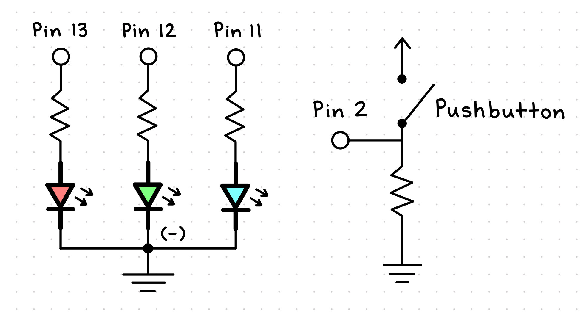
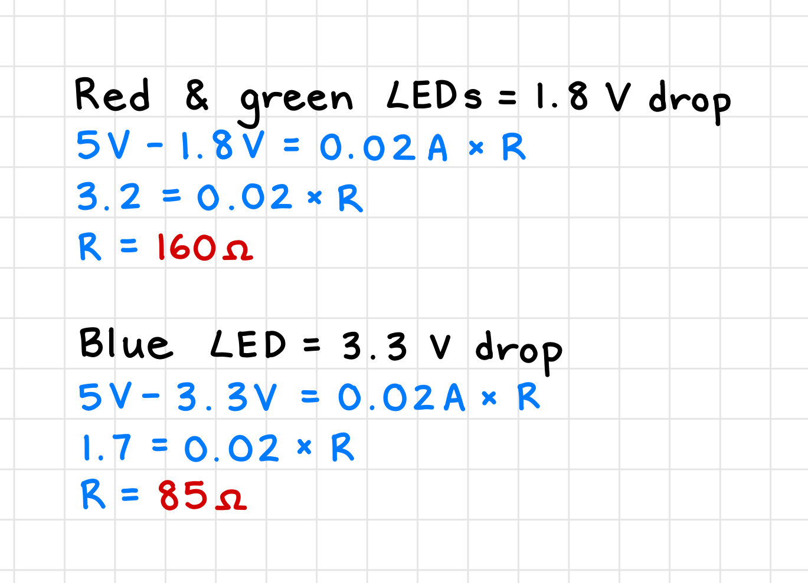
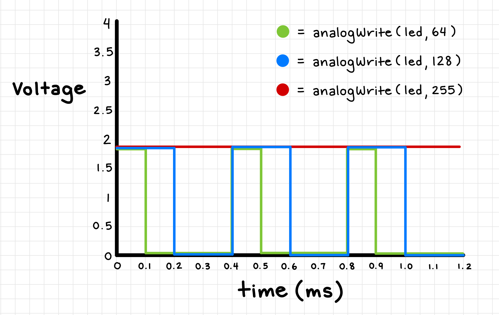

Assignment 2: Fade!
Schematic and Circuit
This assignment required that our circuit use multiple LEDs (at least 3) and a button or a switch.
The current flowing through the LEDs and the button/switch should be limited using resistors,
and at least one of the LEDs should fade.
To satisfy the multiple LEDs requirement, I decided to use a RGB LED because it technically combines 3 seperate LEDs
(red, green, and blue) into one. This allowed me to create a variety of colors by mixing the 3 colors together.
I also choose to implement a pushbutton that, when pushed, will turn on the LED, and when released, will fade the LED off.
My schematic
Below is a schematic I drew that represents my circuit.
To the left of my schematic is the RGB LED. It is connected to 3 digital pins (13, 12, and 11) on the Arduino,
which powers each of the 3 LEDs (red, green, and blue). In between each pin and LED is also a resistor
which limits the current. Finally, the common cathode (the longest leg) of the RGB LED is connected to the
ground pin on the Arduino.
To the right of my schematic is the pushbutton. It is connected to the Arduino via pin 2 and the ground, and a resistor is also placed
to limit the current flowing through the button.

My circuit
I began building my circuit by first setting up the pushbutton. Following one of the circuit examples in our lecture slides,
I placed the button on the breadboard so that it straddled the middle gap. A blue wire connected the top right leg of the button
to pin 2 on the Arduino. On the opposite side of the gap, I matched the bottom right leg of the button to one end of a resistor.
The other end of the resistor was then connected to the ground row on my breadboard using a black wire. Finally, I used a red wire
to connect the bottom left leg of the button directly to the 5V pin on the Arduino.
 Next, I placed the RGB LED on the breadboard so that all 4 legs were on column e. I referred back to the lecture slides and saw that
the longest leg is the common cathode, so I used a small blue wire to connect it to the ground row on my breadboard. The other 3 legs
are the red, green, and blue LEDs. Each leg was connected to one end of a resistor with the appropriate value, and the other end of
the resistor was connected to a wire that led to a digital pin on the Arduino.
Next, I placed the RGB LED on the breadboard so that all 4 legs were on column e. I referred back to the lecture slides and saw that
the longest leg is the common cathode, so I used a small blue wire to connect it to the ground row on my breadboard. The other 3 legs
are the red, green, and blue LEDs. Each leg was connected to one end of a resistor with the appropriate value, and the other end of
the resistor was connected to a wire that led to a digital pin on the Arduino.
 Overall, my circuit has one pushbutton that is connected to the 5V pin and pin 2 on the Arduino and the ground row on the breadboard.
It also has one RGB LED that connects the red LED to pin 11, the green LED to pin 12, the blue LED to pin 13, and the common cathode
to the ground row on the breadboard. Finally, the ground row on the breadboard is connected to the ground pin on the Arduino to
complete the circuit.
Overall, my circuit has one pushbutton that is connected to the 5V pin and pin 2 on the Arduino and the ground row on the breadboard.
It also has one RGB LED that connects the red LED to pin 11, the green LED to pin 12, the blue LED to pin 13, and the common cathode
to the ground row on the breadboard. Finally, the ground row on the breadboard is connected to the ground pin on the Arduino to
complete the circuit.

Calculating resistance
To calculate what resistance to use for the RGB LED and pushbutton, I used Ohm's law (V = IR) to solve for R.
For each of the LEDs, I looked up the voltage drop for their color and subtracted that value
from the Arduino's operating voltage of 5V. Alongside the desired current of 20mA, I was able to
calculate the resistance needed for the red, green, and blue LEDs.
Finally, I used the calculated resistance to find the resistor inside my Arduino starter kit with the next highest value.
In the end, I used a 220 ohm resistor for the red and green LEDs and a 100 ohm resistor for the blue LED.
Also, for the pushbutton, the lecture slides and example sketch both say to use a 10k ohm resistor,
so I that's what I did (lol).

Code Snippet
I started my code with the built-in example sketch "Button" provided by the Arduino IDE. In the original sketch,
a LED connected to pin 13 turns on and off when pressing a pushbutton attached to pin 2. To make the code
work with my RGB LED, I initialized pins 13, 12, and 11 as outputs for the red, green, and blue LEDs.
Alongside the original buttonState variable, I also added 3 variables to store the red, green, and blue LED values,
as well as a variable to store the largest value out of the three.
The first line inside the void loop uses digitalRead() to read the state of the pushbutton. If the button is pressed, the buttonState variable
will be HIGH, and a random value between 0 and 255 will be generated for each of the red, green, and blue LEDs. The RGB LED will then
be turned on using those random color values, and I borrowed code from the
Arduino Project Hub to implement the setColor() function. This function takes the 3 red, green, and blue values and
uses analogWrite() to set the brightness of each LED. As long as the button is pressed, the if statement will continue to run and
generate a random color for each repetition (I added a short delay of 25 milliseconds to make the color changes easier to see).
When the button is released, the else statement will run. The first step in the else statement is to find the maximum value out of the
red, green, and blue values. This will help determine if the LED is currently on, because if the max value is greater than 0, that means
there is at least one LED still emitting light. Right after the button is released, the max value will definitely be greater than 0, so the
code will enter the nested if statement to fade the LED off.
First, a 1 second delay will occur to let the user see the final color. Then, a for loop will run that gradually decreases the
red, green, and blue values until they all reach 0. For each iteration, the red and green values decrease by 1 and the blue value decreases by 2
(I noticed that the blue LED overpowers the other two colors, so I wanted it to fade out faster). The new values are then passed into the
setColor() function to update the LED color, and a short delay of 5 milliseconds is added to make the fading effect visible.
Finally, to make sure the RGB LED is completely off, I used digitalWrite() to set all three LEDs to LOW.
// constants won't change. They're used here to set pin numbers:
const int buttonPin = 2; // the number of the pushbutton pin
const int redPin = 13; // the number of the RGB LED red pin
const int greenPin = 12; // the number of the RGB LED green pin
const int bluePin = 11; // the number of the RGB LED blue pin
// variables will change:
int buttonState = 0; // variable for reading the pushbutton status
int randomRed = 0; // variable for the red LED value
int randomGreen = 0; // variable for the green LED value
int randomBlue = 0; // variable for the blue LED value
int maxValue = 0; // variable for the largest value out of the red, green, and blue values
void setup() {
// initialize the RGB LED pins as an output:
pinMode(redPin, OUTPUT);
pinMode(greenPin, OUTPUT);
pinMode(bluePin, OUTPUT);
// initialize the pushbutton pin as an input:
pinMode(buttonPin, INPUT);
}
void loop() {
// read the state of the pushbutton value:
buttonState = digitalRead(buttonPin);
// check if the pushbutton is pressed. If it is, the buttonState is HIGH:
if (buttonState == HIGH) {
// generate random integer numbers for the red, green, and blue values
randomRed = random(0, 255);
randomGreen = random(0, 255);
randomBlue = random(0, 255);
// turn LED on at that random color
setColor(randomRed, randomGreen, randomBlue);
// wait 0.025 seconds to see the colors flashing
delay(25);
} else {
// find the max value of red, green, and blue
maxValue = max(randomRed, randomGreen);
maxValue = max(maxValue, randomBlue);
// if LED is on, fade off
if (maxValue > 0) {
// wait 1 second on the final color
delay(1000);
// fade the LED off
for (int i = 0; i < maxValue; i++) {
randomRed = max(randomRed - 1, 0);
randomGreen = max(randomGreen - 1, 0);
randomBlue = max(randomBlue - 2, 0);
setColor(randomRed, randomGreen, randomBlue);
delay(5);
}
// make sure the LED is turned off
digitalWrite(redPin, LOW);
digitalWrite(greenPin, LOW);
digitalWrite(bluePin, LOW);
}
}
}
// function that sets the RGB LED at the given red, green, and blue values
// code from https://projecthub.arduino.cc/semsemharaz/interfacing-rgb-led-with-arduino-b59902
void setColor(int redValue, int greenValue, int blueValue) {
analogWrite(redPin, redValue);
analogWrite(greenPin, greenValue);
analogWrite(bluePin, blueValue);
}
You can download my full code as an Arduino file here!
Circuit Operation
The following gifs demonstrate how my final circuit operates. It works well while the button is pressed, and the RGB LED cycles through
the random colors as intended. However, when the button is released, the LED does not always fade out as expected. I wanted the
final color to stay the same hue and only grow more dim throughout the fade, but sometimes, the color will abruptly change to only
red, green, or blue before turning off completely.
I suspect this happens because two of the red/green/blue color values usually arrive at 0 before the third value does.
I tried to fix this by changing the color values to float variables and subtracting (colorValue/maxValue) inside the
for loop so that all 3 LEDs would arrive at 0 at the same time, but then the blue still overpowered the red and green LEDs.
In the end, I was unable to find a solution that fixed this issue, but I'm still happy with how my circuit
turned out! :)
Additional Questions
1: Draw a chart where the X axis is time and the Y axis is voltage. Draw 3 lines representing
the voltage across an LED with analogWrite(led, 64), analogWrite(led, 128), and analogWrite(led, 255).
I first drew a line that represented the voltage across an LED with analogWrite(led, 255). I also assumed that the LED is a red LED.
Red LEDs typically have a forward voltage of about 1.8V, so I drew a red line that stayed constant at 1.8V over time.
Next, I drew a line that represented the voltage across an LED with analogWrite(led, 128). I looked through the lecture slides and
found that it has a 50% duty cycle, where 50% is on and 50% is off. The blue line on my graph reflects this, as it is at 1.8V for 0.2 ms
and then at 0V for 0.2 ms, and this pattern repeats every 0.4 ms.
Finally, I drew a line that represented the voltage across an LED with analogWrite(led, 64). In that same slide, I also saw that
the duty cycle would be 25%, with 25% on and 75% off. The green line on my graph reflects this, as it is at 1.8V for 0.1 ms
and then at 0V for 0.3 ms, and this pattern repeats every 0.4 ms.

2: Given your schematic, circuit, and firmware, assuming the only thing that draws current is
your LEDs, how long would your circuit run if powered by a 1200 mAh battery?
If the button is left unpressed, I assume that the circuit will be able to run for a very long time because no current is
being drawn into the button or the RGB LED. However, if the button were continuously pressed, the circuit would run
for approximately 60 hours. I calculated this by diving the battery capacity (1200 mAh) by the total current draw of the circuit (20 mA).
With my circuit in particular, the time would likely be shorter than the calculated 60 hours. This is because the RGB LED
consists of 3 LEDs and each passes current through them. While they wouldn't be on high all the time (since the colors are random),
the current draw of all 3 LEDs would still be higher than 20 mA. Thus, the longest time my circuit would run with the button pressed
is probably less than 60 hours.
3: Measure and record the actual voltage across one of your LEDs when it's on.
How does this compare to the theoretical forward voltage for your LED color?
I wanted to test this with the blue LED inside of the RGB LED. To find the theoretical forward voltage, I first
looked up the datasheet for a super bright blue LED,
and I found that the typical forward voltage when the current is 20 mA is 3.2 V and the max forward voltage is 4.0 V.
Then, on my circuit, I moved the wire that connected the blue LED from pin 11 to the 5V pin so that the LED would be
on continuously and I wouldn't have to keep pressing the button.
I brought out my multimeter, and I placed the red probe on the leg of the blue LED and the black probe
on the common cathode leg. When I read the value on the multimeter, it was 2.96 V! This is slightly lower than the typical
forward voltage of 3.2 V. However, I was also curious if the voltage would be different if I used a singular blue LED instead of
the blue LED inside of the RGB LED. When I tested that, the voltage was 3.16 V, which is closer to the typical forward voltage.
Very interesting...
4: Did you use AI tools in completing this assignment?
If yes, please provide details on how/when, as well as a brief reflection.
If no, you can either leave this question blank, or provide other information if you'd like.
I used AI (specifically ChatGPT) to help me answer the additional assignment questions.